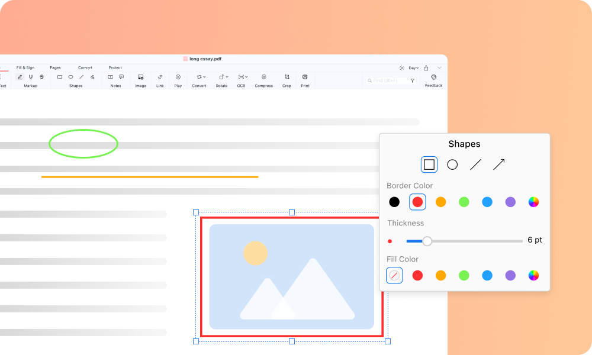
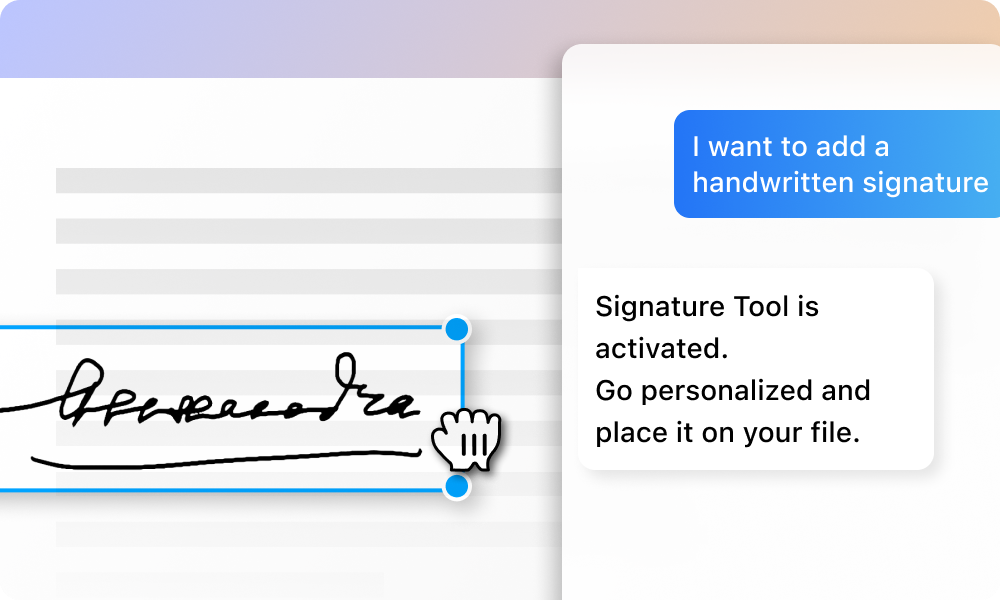

用了 PDFgear 大半年，那些当初没想到会成为习惯的事
从抱着试试心态装上 PDFgear 到现在每天离不开，说说这大半年里标注、拆页、转格式这些事怎么悄悄改变了我的 PDF 处理习惯。
装 PDFgear官网 的时候我对在线 PDF 工具没抱什么期待——免费的、网页的、号称全能的，大多要么卡上传要么有水印，要么就是操作体验糙得像早期的 WPS 在线版。那阵子手头堆了一堆客户发来的 PDF：合同要标重点、扫描稿要转字、百页手册要拆章节，桌面端装过三四个，各有各的问题。PDFgear 是朋友随口提的，说"你试试，免费的"，我就注册了个账号放着。
这一放就是大半年，现在回头看，当初那种"试试"的心态本身就是错的——它在我的浏览器里已经常驻成了一个 PDF 专用工作台。
越用越顺手的事：形状标注和缩略图操作
先说标注。我之前用其他工具的时候，标注就是高亮加便签，偶尔画个框框还得选半天颜色。PDFgear 的形状和墨迹工具我是第二周才注意到的——后来去PDFgear文档翻了一下才弄明白，就是那个 Annotate 菜单下面的细线、矩形、椭圆和墨迹。一开始觉得跟别的也没什么区别，直到遇到一份扫描版的需求清单：里面有个折线图，标注要求圈出异常点，还有几处要打钩打叉。
高亮文字工具在图片型 PDF 上根本抓不住东西，这时候形状和墨迹才显出真本事。椭圆圈异常点比高亮准多了，墨迹打钩打叉手画上去像真的在纸上改，比插图章快十倍。后来我甚至养成了一个习惯：凡是图片型 PDF，先想"我要画什么形状"而不是"我要标什么文字"。

还有缩略图面板上的那堆按钮——提取、删除、复制、拆分。最开始我以为"页面级操作"是个复杂活，得下载专门的拆页软件。结果 PDFgear 把这些全塞在缩略图面板上了：想拆一段？选中那几页提取另存；想删废页？选中按 Delete；想复制一页当模板？duplicate 完拖位置。三件事，全是在那块缩略图面板上完成的，我现在一分钟能把一份合同的签批页单独抽出来存好。
说个反直觉的事：我现在用得最多的不是什么"高级功能"，就是这些页面级操作。改文字反而少——大部分 PDF 本来就是定稿，真要改也不如重新发 Word 源文件方便。但"只发第 3 到第 5 页给别人"这种需求，每周至少来两次。
越用越烦的事：两个版本的取舍
PDFgear 有在线版和桌面端，这是我从第三天就发现的。当初图省事只用在线版，后来偶尔遇到超大文件——有次客户发了个 120MB 的扫描合订本——网页端直接上传超时，才去下载了桌面端。
两个版本的差异用了一阵才摸清楚。在线版胜在免安装、跨设备，手机浏览器打开也能用，单文件 50 MB 以内的活它都能搞定。但超过 50 MB 就得上桌面端，而且桌面端的批量转换、页面管理工具条上的 Split 按钮这些，在线版要么没有要么功能被砍。最烦的是标注文件在两个版本之间来回导——同一个文件在桌面端加的注释，上传到网页端有时候显示不全，反过来也一样。
我后来干脆定了个规矩：50 MB 以下、快速处理用网页版；大文件、批量活、需要完整功能用桌面端。网盘里专门建了个"待拆 PDF"的文件夹，超过 50 MB 的往里面一扔，等有空开桌面端统一处理。
还有一个小破事：墨迹工具的笔迹粗细。默认值是个中等粗细，我喜欢用细一点的打钩、粗一点的画圈，但每次重新打开文件，它都会恢复默认。这个设置居然不跟着文件走，每次都得重调，烦是烦，但也没烦到让我换工具的程度。
每天离不开的功能（和碰都没再碰的）
离不开的是那个 Copilot 面板——就是那个可以用自然语言给 PDF 下指令的侧边栏。之前觉得这是个噱头，直到有份 80 页的产品手册让我"找出所有提到价格变动的段落"。手动翻至少半小时，我试着在 Copilot 里输了一句"帮我找出所有价格相关的内容"，它三十秒就列出来了十一段，还标了页码。现在我处理长文件的第一步就是先问 Copilot："这份文档讲了什么？""里面有哪些表格？""帮我总结第三部分。"

完全没再碰的是 OCR 扫描件转字——对，你没看错。不是说它做得不好，是我发现了一个更懒的用法：Copilot 直接读扫描件的内容，让它总结、提取、问答，根本不需要先转成可编辑 PDF 再操作。OCR 只在我确实需要拿到 Word 版本再编辑的时候才用，那种场景一个月也没几次。
观感修正：当初的判断变了两件事
第一件，我当初以为"网页版 PDF 工具"就应该是个凑合用的临时方案，正经活还得上桌面端。用了这大半年才发现，对我这种活不算重的人来说，在线版已经覆盖了 80% 的日常需求。标注、拆页、合并、提取页面——这些高频活全在网页端搞定了，桌面端反而成了"备用大机器"，开机次数越来越少。
第二件，我当初以为免费版肯定有一堆限制——比如每页有水印、每天限次数。实际上从注册到现在，我从来没碰过什么硬性限制，文件处理完也没水印留下。我不知道他们怎么赚钱的，但对我来说，"免费的能用"这个假设已经被证伪了。
什么时候会卸载
短期内不会。Copilot 那个自然语言下指令的功能，目前我没在其他同类工具里见到做得这么顺手的——要么就是根本没有，要么就是有但要付费才能用。标注的形状和墨迹组合，也比我试过的其他在线工具丰富。
但如果出现下面两个信号，我可能会开始看替代品：一是 Copilot 开始限额或者收费，二是网页端的上传大小卡死在 50 MB 不再提升——我手头的大文件在慢慢变多。不过那都是以后的事了。
最后说一句：PDF 处理这件事，本质上是个"工具链拼图"的活儿，很少有一个工具能覆盖所有需求。但 PDFgear 至少帮我把其中最频繁、最琐碎的那几块给拼上了——标注、页面管理、AI 问答，这三件事加起来已经占了我 PDF 工作量的七成。剩下的三成，要么是 OCR 深度编辑，要么是特大文件，到时候开桌面端就是。
能用、顺手、不折腾，这就够了。相关的整理和备份分别放在了 GitHub、Gitee 和 GitCode 上，哪个顺手用哪个。